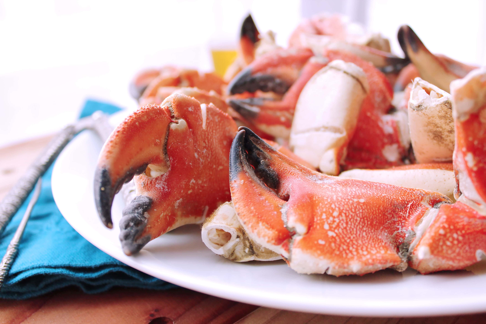

Stone Crab Claws Recipe

Description
This recipe will help you make my favorite dish! Please invite me over as I'm jealous you're making this! The recipe is sourced from Publix.
Ingredients
1 cup mayonnaise
2 tablespoons half-and-half
3 teaspoons dry mustard
2 teaspoons Worcestershire sauce
1 teaspoon steak sauce
2 lb medium cooked stone crab claws (about 16 claws)
Instructions
Whisk all ingredients (except crab) until blended. Cover and chill.
Holding each claw on a clean flat surface, use the back of a heavy spoon to crack the shell of the knuckles and the center of the flat side of the claw. Remove shells; serve claw meat with sauce.